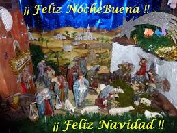
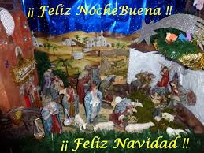

Menu
Juan Carlos Romero Jimenez
Villa Iluminada
Introduccion
Atlixco, nuevamente estará llena de la luz. Te esperarán noches de colorido que harán que pases una grata estancia, caminando por sus calles que te deslumbrarán a cada paso.
La “Villa Iluminada” es un recorrido que resalta la belleza arquitectónica de esta ciudad, embelleciéndola con luz.
Durante más de cuarenta días las calles formarán un circuito de luz y color, vestidas de figuras y escenas alusivas a la navidad, las tradiciones y la identidad de la ciudad.
Los edificios antiguos serán engalanados con luces, lo que destacará su bella arquitectura y valor histórico. Además, no te pierdas actividades:
Artísticas
Culturales
Deportivas
Stands de Flores
Artesanías
Artículos navideños y de temporada
Gastronomía típica.
Más de tres mil figuras iluminadas de colores navideños tendrá la Villa Iluminada 2014, en su cuarta edición, para la que esperan unos 500 mil visitantes.
|
|
Juan Carlos Romero Jimenez
IGNAGURACION DE LA VILLA ILUMINADA
El recorrido del espectáculo iniciará en la Calle Hidalgo, bajando hacia el zócalo de Atlixco, pasa por el callejón Constitución y sigue por la calle 4 norte, frente al exconvento de El Carmen, llegará a calle Nicolás Bravo, después al boulevar Ferrocarriles y finalizará en el Parque Revolución.
Nota: El escendido de luces sera martes 25 de noviembre será a las 19:30 hrs. en Plaza de Armas.
|
|

|
Villa Iluminada
MAPA DE ATLIXCO
Mapa de atlixco, que nos ayudara todo aquel turista que desea venir atlixco a visitar la Villa Iluminada, "PORQUE ATLIXO SE VUELVE A ENCENDER".
Villa Iluminada
BIENVENIDOS
Bienvenido a nuestra ciudad, Atlixco cuenta con una gran riqueza que podras corroborar al caminar por las calles es esta Villa iluminada y estoy seguro que te sorprenderá la belleza con la que nos engalanamos para recibir a ti y atu familia.
En cada año consecutivo realizamos Villa Iluminada pensando en tu, a nombre de los atlixquenses agradecemos tu preferencia por visitar nuestra ciudad, recibiras una atención de calidad y sobretodo un trato amable de los ciudadanos, comerciantes y empresarios, porque Atlixco se caracteriza por la calidez de sus habitantes.
Te invito a que ademas de recorrer Villa Iluminada, conozcas mas lugares de nuestro munucipio como: Metepec, Axocopan, el Cerro de San Miguel, Viveros de Cabrera, la Pinacoteca Municipal, admira la arquitectura religiosa y saborea nuestra exquisita gastronimia en el mercado municipal o restaurantes, tienes una gran variedad de opciones para divertirte, bien vale la pena pasar unos días en nuestro municipio.
Te recuerdo que durante todo el año Atlixco es una buena opcion para visitar, por lo pronto disfruta de este gran espectaculo de luces y color que nosda Villa Iluminada, mismo que en marca la Feria de la NocheBuena y culmina con la tradicional Fiesta de Reyes.
Te deseo que tengas una estancia agradable con tus amigos y familiares.
Villa Iluminada
¿COMO NACIO?
Villa Iluminada nace para intregar a la familia mexicana en un ambiente de luz y calor, enmarcada bajo la tranquilidad de la ciudad. Esta fiesta es digna de compartirla con todos los visitantes. Creada por manos atlixquenses de mujeres, hombres y jovenes, que con pasion han trabajo para crear esta magia y asi generar el sustento para sus familias. Este proyecto tiene el objetivo de preservar nuestra cultura y tradiciones fomentando la convicencia de paz y amor. Por una vez mas "Atlixco se llena de magia con Villa iluminada" "Nos vestimos de luz y color".
Villa Iluminada
MAPA DE LA VILLA ILUMINADA
Mapa del recorrido de la Villa Iluminada:
Villa Iluminada
IMAGENES DE LA VILLA ILUMINADA
VIDEO DE LA IGNAGURACION DE LA VILLA ILUMINADA
Fiesta de NocheBuena
Introduccion
La Nochebuena se celebra la noche del 24 de diciembre, víspera del día de Navidad (25 de diciembre). Es la celebración cristiana de la noche en que nació Jesús. Las costumbres varían de unos países a otros, pero es bastante común una reunión familiar para cenar e intercambiarse regalos. Se considera como una fiesta de carácter cultural y familiar, ya que también se reúnen las familias aunque no haya celebración religiosa. Los testigos de Jehová no celebran esta festividad por considerarla de carácter pagano.
|
|
Juan Carlos Romero Jimenez
SIGNIFICADO DE LA FLOR DE NOCHEBUENA
Flor de Nochebuena es el nombre que recibe en México una planta cuyo nombre científico es euphorbia pulcherrima. Esta última palabra significa en latín "la más bella". También se conoce como flor de Pascua, estrella federal y pastora.

|
|
Fiesta de NocheBuena
HISTORIA DE LA FLOR DE LA NOCHEBUENA
Es una especie originaria de México y Centroamérica. Los mexicas utilizaban esta planta en celebraciones rituales como símbolo de la pureza y la vida nueva de los guerreros muertos asociados al color rojo de la sangre. La palabra originaria que se utilizaba para referirse a esta planta era en lengua náhuatl: cuetlaxóchitl. Se puede traducir como "flor que se marchita" aunque también existen otras posibles traducciones que la identifican como "flor de cuero". También sus hojas eran utilizadas como tinte natural.
A partir de la colonización de América, se empezó a utilizar como elemento de decoración cristiana durante el periodo navideño debido al color carmesí de sus hojas.
Durante el siglo XIX, empezó a extenderse a otros lugares gracias a JR Poinsett, primer embajador estadounidense en México. De hecho, en los Estados Unidos y en algunos países de Europa esta planta recibe el nombre de poinsettia o poinsetia.
En la actualidad, su uso decorativo está muy extendido y se asocia a la época navideña debido a su periodo de floración en el hemisferio norte.
Esta planta tiene unas hojas de color verde oscuro y unas hojas superiores llamadas brácteas de diferentes colores con aspecto de pétalos. Estas hojas suelen ser de color rojo, aunque también existen ejemplares amarillos, blancos y rosados. En realidad, la flor de esta planta es muy pequeña, de color amarillo y está protegida entre estas hojas. En el hemisferio norte florece durante noviembre y diciembre. Esta planta no se utiliza para el consumo ya que la ingestión de sus hojas puede provocar vómitos y diarreas.
Se utiliza en jardinería y en su forma original de arbusto puede alcanzar 4 metros de altura. Sin embargo, se ha popularizado en el mundo de la floricultura. Como planta de interior conviene que reciba luz solar aunque no de forma directa. No debe ser regada en abundancia, únicamente dos veces por semana y manteniendo la tierra húmeda.
Fiesta de NocheBuena
FERIA DE LA NOCHEBUENA EN ATLIXCO 2014
A partir del 25 de noviembre los mejores productores de la región exponen y venden una variedad enorme de plantas de Nochebuena a precios competitivos en mayoreo y menudeo concentrados en el Recinto Ferial de Atlixco.
LUGAR
[Calle: N. Bravo No.405, Atlixco, Puebla (RECINTO FERIAL ATLIXCO)Atlixco]
Fiesta de NocheBuena
FIESTA DE NOCHEBUENA
La cena de Nochebuena es uno de las fiestas familiares más importante del años, y sea una cena íntima entre pocas personas, o una enorme fiesta familiar, requiere mucha planificación.
Vamos llegando, viendo a la familia que llevamos,en muchas ocasiones meses sin ver. Disfrutar de los primos, los pequeños que haya en la familia, las bromas y anécdotas que han sucedido últimamente... en definitiva, una de las noches familiares más populares del año.
Son muchas las ideas para la cena de Nochebuena que tenemos en mente días antes. Queremos que nuestros seres queridos disfruten de la mejor cena de Nochebuena cada año, con recetas especiales, mesas adornadas, postres irresistibles... Los preparativos para la cena de Nochebuena son imprescindibles para conseguir el mejor resultado para esta noche tan especial
Fiesta de NocheBuena
VIDEO DE LA CENA NAVIDEÑA


 
